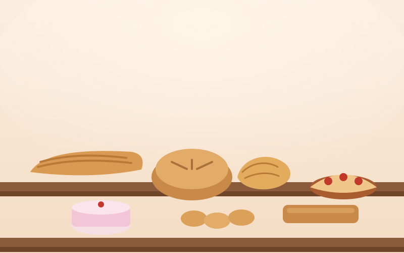

Welcome to Maison Sarah Bakery
Handmade bread and pastries, baked every morning by Sarah and her team.

Pre-orders close Thursday evening.
Everything here was dough before sunrise. Click here to learn more about our special dough
Handmade bread and pastries, baked every morning by Sarah and her team.

Pre-orders close Thursday evening.
Everything here was dough before sunrise. Click here to learn more about our special dough